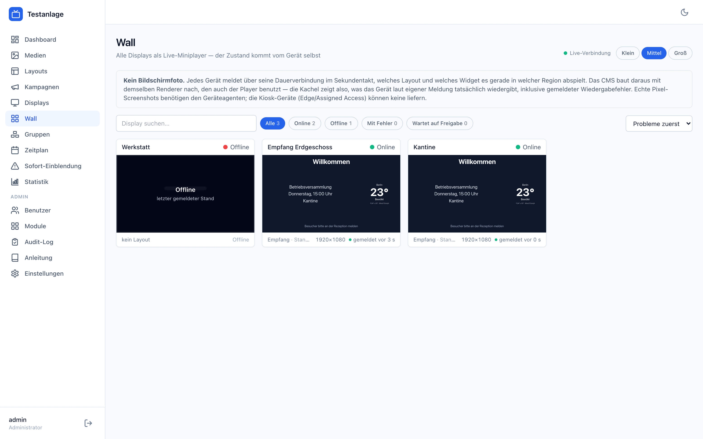

OpenSignage
Digital Signage, das in einer Sekunde umschaltet — statt zu pollen.

Installation
Ein Befehl, dann läuft es. Was dabei automatisch passiert und was optional ist.
Module
Der Kern ist klein. Alles andere lässt sich abschalten — auch in der Schnittstelle.
Windows-Player
Geräte unbeaufsichtigt einrichten: Kiosk, Autostart, Ein- und Ausschaltzeiten.
Betrieb
Sichern, aktualisieren, Zertifikat austauschen, Protokolle lesen.
Worum es geht
OpenSignage ist ein selbst betriebenes Content-Management-System für Bildschirme: Layouts mit Regionen, Playlists, Kampagnen, Zeitpläne, Displayverwaltung. Der Unterschied zu den üblichen Lösungen liegt im Übertragungsweg.
Die Player fragen nicht nach, sie hängen dran. Jedes Gerät hält eine dauerhafte WebSocket-Verbindung zum CMS. Eine Änderung löst einen gezielten Push an genau die betroffenen Displays aus — nachladen und Wechsel ohne schwarzes Bild, in etwa einer Sekunde. Kein Abrufintervall, auf das man wartet.
Fällt das Netz aus, läuft der zuletzt gültige Stand aus dem lokalen Zwischenspeicher weiter und gleicht sich beim Wiederverbinden ab. Ein Gerät ohne Verbindung zeigt also weiter Inhalt, nicht eine Fehlermeldung.
Was mitgeliefert wird
| Bereich | Inhalt |
|---|---|
| Layout-Editor | Regionen ziehen, ausrichten, aneinander einrasten, gruppiert verschieben. Layoutgröße ändern skaliert die Regionen proportional mit. Rückgängig/Wiederholen, Tastaturbedienung, Vorschau im Zielformat. |
| Wall | Alle Displays als Live-Miniplayer. Jedes Gerät meldet über seine bestehende Verbindung seinen tatsächlichen Ausgabezustand. |
| Inhalte | Bild, Video, Audio, PDF, Text, Uhr, Wetter, Nachrichtenticker, Webseite, eigenes HTML, Monitoring. |
| Planung | Kampagnen, Zeitplan mit Tageszeiten und Vorrang, Display-Gruppen. |
| Betrieb | Betriebsprotokolle, Verfügbarkeit, Wiedergabenachweis, Fehlerberichte, Änderungsprotokoll. |
| Windows-Kiosk | Fertiges Paket: Assigned Access, Autostart, Selbstaktualisierung, Ein-/Ausschaltzeiten, Geräteagent für Neustart. |
Was die Wall zeigt — und was nicht
Die Wall rendert mit demselben Renderer wie der Player einen maßstabsgetreuen Mini-Player aus dem, was das Gerät selbst meldet: Modus, Inhaltsversion, laufendes Widget je Region, Wiedergabefehler.
Das ist kein Bildschirmfoto. Kiosk-Geräte unter Assigned Access haben keine Betriebssystem-Brücke, können also keine Pixel liefern. Die Oberfläche schreibt deshalb „gemeldet vor X s" oder „offline seit …" und behauptet nie, ein Foto zu zeigen. Wer ein Foto erwartet und keines bekommt, soll wissen warum.
